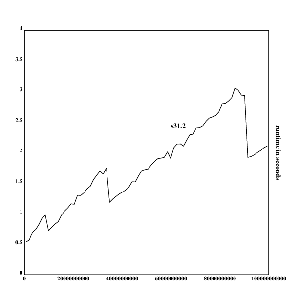
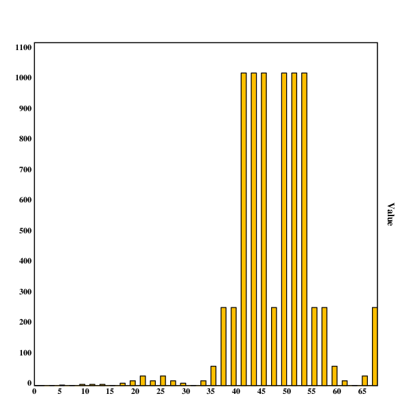

, and also grows quicker.")
author: niplav, created: 2019-02-10, modified: 2022-02-23, language: english, status: in progress, importance: 3, confidence: highly likely
Solutions to the 99 problems in Klong, literate programming style. Attempts to produce the shortest complete solution to these problems up to date.
Weil ein Vers dir gelingt in einer gebildeten Sprache,
Die für dich dichtet und denkt, glaubst du schon Dichter zu sein?
– Friedrich Schiller, “Votivtafeln” (Die Kunstschätzer), 1804
s7 is inspired by a function by nmh, who wrote it in the Klong documentation. /u/John_Earnest provided a more elegant s9 on /r/apljk. Dave Long provided a much more elegant s8, s26, c1, s49 and s55 over email. s31 is from the Wikipedia article about K.
The pure Klong code, without tests, explanations, comments or performance tests is available here. It currently implements solutions for all problems up to P64 (excluding P47 and P48), in 2428 bytes.
Since this collection of solutions attempts to maximize for terseness,
several concessions concerning completeness have to be made. There
is nearly no checking for correct arguments, except for empty lists.
Variables are declared locally. The solution for problem N is called
sN, helper functions are numbered aN for the Nth helper function in
Working with lists,
bN in Arithmetic, cN in
Logic and Codes and so on.
The solutions use flr and dp from the util library and sqr and
ln from the math library in the standard library.
.l("util")
.l("math")
These would be, of course, trivial to implement on your own:
flr::{[f];f::x;y@(f'y)?1}, dp::{:[@x;0;1+|/.f'x]} and
sqr::{[a];a::x;:[0=x;0;{(x+a%x)%2}:~a]} (taken directly from the
library).
The function reverses the first argument and then returns the first element.
s1::{*|x}
mylast::s1
Testing with the example obtains the correct result:
mylast([:a :b :c :d])
:d
Another possible version would be s1::{x@((#x)-1)}. These can be
compared to each other in respect to their performance (the performance
test repeated 10 times each to avoid advantages from caching):
.l("time")
s1::{*|x}
(+/1_10{x;time({s1(!3000000)})}\*[])%10
0.0842222
s1::{x@((#x)-1)}
(+/1_10{x;time({s1(!3000000)})}\*[])%10
0.1471947
One can see that the first version of s1 is nearly twice as fast
as the second version.
Klong apparently has a very efficient reversing operation for lists.
This implementation uses a property of the Take verb that allows
indexing from the end of the list with negative numbers. A longer and
less elegant solution, re-using s1, would be s2::{((|x)@2),s1(x)}.
Alternatively, one could also use direct indexing while reversing the
list: s2::{(|x)@[1 0]}.
s2::{(-2)#x}
mybutlast::s2
We again take the test from the problems list:
mybutlast([:a :b :c :d])
[:c :d]
This one is very straightforward in Klong: indexing is zero-based, so one subtracts one of the second element and then extracts the value.
s3::{x@y-1}
elementat::s3
Testing:
elementat([:a :b :c :d :e];3)
:c
Since # is a Klong primitive for the length of a list, this
problem is trivial.
s4::{#x}
Similar to problem 5, there is a primitive for this.
s5::{|x}
Since = compares a list element-wise (and returns a list with boolean
values corresponding to the equality of the two lists), we have to use
the ~ primitive, which compares lists by structure and content. So we
compare x and its reversion that way.
s6::{x~|x}
This solution is taken from the Klong
documentation), while fixing
a little problem. The original solution was s7::{,/:~x}, which applied
the concatenation operator to the sublists of a list as long as the
list changes with each operation, and then returned the list. However,
that solution failed with nested lists that contain only one element:
"If “a” is a single-element list, return the single element." (from the
Klong documentation on Over). For flattening a list, that is not right:
s7([1]) should be [1], not 1. So this code differentiates between
a list that only contains an atom, and returns that, or executes the original
code otherwise.
s7::{{:[@,/x;x;,/x]}:~x}
myflatten::s7
Tests:
myflatten([:a [:b [:c :d] :e]])
[:a :b :c :d :e]
myflatten([0])
[0]
This is also the result in the problems statement.
Testing it with nested empty lists doesn't work:
myflatten([[] [[]] [[][]]])
[[] [] []]
This solution first creates a list of 1 and 0 that has 1 at at
positions where in x the element is followed by an value different
from itself. Because one has one element too much in the list ([] has
the positions [1]), we only take as many elements as we need off the
beginning of the resulting positions list (in these cases, it's #x,
the length of the argument list).
We then use Expand/Where to find the positions of 1 in the list of
positions, and extract them with At/Index.
s8::{x@&(#x)#~0,~:'x}
compress::s8
Compressing the example list returns the desired result:
compress([:a :a :a :a :b :c :c :a :a :d :e :e :e :e])
[:a :b :c :a :d :e]
And compressing the empty list (and a 1-element list) works as well:
compress([])
[]
compress([1])
[1]
Here, we first do the same matching between the elements as in P08,
but then we reverse the results and append 0 at the start. In that
way, we can use Expand/Where to obtain the positions of 1 in the list
(that's where the element in the list changes). We then can use Cut to
cut out sublists ending before the given positions. Because ~~:'[]
returns not [], but the number 1 (for whatever reason), we have
to build in a special case for the empty list at the beginning.
s9::{:[x~[];[];(&0,~~:'x):_x]}
pack::s9
Since the problems don't specify how we should deal with empty
lists (whether one should return [] or [[]]), we could consider
s9::{(&0,~'~:'x):_x}, which returns the latter. But this clashes with
s10, where s10([]) returns [[0]], which doesn't seem to be correct
at all.
Testing it:
pack([:a :a :a :a :b :c :c :a :a :d :e :e :e :e])
[[:a :a :a :a] [:b] [:c :c] [:a :a] [:d] [:e :e :e :e]]
As the problem statement suggests, this solution is pretty
straightforward. For every sublist of the result of s9, we append
its length to its first element.
s10::{{(#x),*x}'s9(x)}
encode::s10
Tests:
encode([:a :a :a :a :b :c :c :a :a :d :e :e :e :e])
[[4 :a] [1 :b] [2 :c] [2 :a] [1 :d] [4 :e]]
Again, this is quite easy. For the result of s10, we test whether the
length of the sublist is 1, and if it is, then we return just the value,
otherwise we return the list.
s11::{{:[1=*x;*|x;x]}'s10(x)}
encodemodified::s11
Testing:
encodemodified([:a :a :a :a :b :c :c :a :a :d :e :e :e :e])
[[4 :a] :b [2 :c] [2 :a] :d [4 :e]]
This works fine. However, encodemodified shows weird behavior with lists with one element:
encodemodified([0])
[0 [0]]
encodemodified([1])
[1]
It works fine with [], though:
encodemodified([])
[]
Here, we simply execute a function over the list: If the list element
is an atom (it is itself not a list), we simply return it, otherwise
we use Reshape to repeat the last element of x (x has the form
[freq val]) freq times. The result is then flattened by appending
the list elements to each other.
s12::{,/{:[@x;x;(*x):^x@1]}'x}
The difference between 'creating sublists' and 'indexing them' is
not very big in Klong, but a reasonable attempt is presented here.
We start like in P09: First, we check whether our function argument
is the empty list, in case of which we return immediately with the
empty list. Otherwise we store the outer function argument x in
the local variable a. Then we proceed by again executing Match
between the elements of the list, and append 1 at the beginning
to indicate that we want to include the first sublist. This results
in a list containing the starting positions of the sublists with different
elements. We pass this list pairwise to a function, where we first
check whether the difference is 1. In this case, the sublist has
length 1 as well and can be returned as an atom, otherwise we
return the length of the sequence concatenated with its first element.
s13::{[a];a::x;:[x~[];[];{:[1=y-x;a@x;(y-x),a@x]}:'&1,~~:'x]}
encodedirect::s13
Testing this function should return the same result as s11:
encodedirect([:a :a :a :a :b :c :c :a :a :d :e :e :e :e])
[[4 :a] :b [2 :c] [2 :a] :d]
Which it does.
One can now compare the speed of the direct solution with the speed of the indirect solution:
.l("time")
s9::{:[x~[];[];(&0,~~:'x):_x]}
s10::{{(#x),*x}'s9(x)}
s11::{{:[1=*x;*|x;x]}'s10(x)}
time({s11(!10000)})
0.010219
s13::{[a];a::x;:[x~[];[];{:[1=y-x;a@x;(y-x),a@x]}:'&1,~~:'x]}
time({s13(!10000)})
1.884073
As one can see, the more complex solution s13 is much slower than the
more idiomatic s11.
This solution is a specialization of the solution to P15. We take the function
2:^x (repeat x 2 times, abusing Reshape) and call Each-Left on the first
function argument with it. Because the result is a list of lists, we then have
to flatten the list using the well known ,/ pattern.
s14::{,/2:^:\x}
dupli::s14
There are two alternative, but longer solutions: s14::{,/{x,x}'x}
is more naïve, and s14::{x@_0.5*!2*#x} is perhaps slightly more
amusing.
The test runs through, as expected:
dupli([:a :b :c :c :d])
[:a :a :b :b :c :c :c :c :d :d]
We're now interested in the performance of these functions, so we time
calling the different versions with 10000 elements:
.l("time")
s14::{,/2:^:\x}
time({s14(!10000)})
0.666863
s14::{,/{x,x}'x}
time({s14(!10000)})
0.64103
s14::{x@_0.5*!2*#x}
time({s14(!10000)})
0.022282
As one can see, the indexing-based solution is by far the fastest, with little difference between the other two.
Here we have the more general case of P14. We simply have to replace 2
by the second argument y here: Repeat x y times for every x in
the first argument, then concatenate the result.
s15::{,/y:^:\x}
repli::s15
Test:
repli([:a :b :c];3)
[:a :a :a :b :b :b :c :c :c]
The example given indicates that the indexing is 1-based. The Drop verb
doesn't work with two lists (although that would make a nice addition
to the language), so we have to find a simpler solution. s16 works
by creating a list with all indices to x (!#x) and then executing
the modulo of y on it. The result is a list in the form of [0 1 2 3 … (y-1) 0 1 2 3 …].
The elements we want to avoid are at the positions where the list
contains y-1, so we create a list where 1 is at the positions
where the original list had elements smaller than y-1. We then use
& to obtain the positions of the value 1 and then simply index x
by those positions.
s16::{x@&(y-1)>(!#x)!y}
drop::s16
We test the implementation:
drop([:a :b :c :d :e :f :g :h :i :k];3)
[:a :b :d :e :g :h :k]
drop([:a :b :c];1)
[]
drop([];1)
kg: error: rem: type error: [[] 1]
So our solution fails for empty lists. We could modify it to
include a simple conditional statement to return the empty list
if x is []: s16::{:[x~[];[];x@&(y-1)>(!#x)!y]}.
For this problem, Split is the fitting verb. It can receive a list of
lengths, and is quite lenient with lists that don't fit exactly. So we
concatenate y with the total length of x and then just split x
by that.
s17::{(y,#x):#x}
split::s17
An alternative solution could be s17::{(,y#x),,y_x}, in which one
concatenates taking y elements of x with dropping y elements of x.
Executing the test returns the correct result:
split([:a :b :c :d :e :f :g :h :i :k]; 3)
[[:a :b :c] [:d :e :f :g :h :i :k]]
The Split verb doesn't work with a range of 0:
split([1 2 3];0)
kg: error: split: range error: 0
Here, we can simply take the first z elements from the start of
the list, and then drop y-1 elements of that list (we have to subtract
1 because indexing in lists is 0-based).
s18::{(y-1)_z#x}
slice::s18
The test runs through, as expected:
slice([:a :b :c :d :e :f :g :h :i :k];3;7)
[:c :d :e :f :g]
However, passing arguments that are not long enough gives some interesting results:
slice([:a];3;7)
[:a :a :a :a :a]
This happens because if Take doesn't find enough elements, it simply repeats the elements it finds.
An alternative solution, using Index over a range, is
s18::{x@(y-1)+!1+z-y}.
Klong has a verb for that™. By default, :+ rotates to the right with
positive, and to the left with negative integers, so we have to reverse
the sign of y.
s19::{(-y):+x}
rotate::s19
Tests:
rotate([:a :b :c :d :e :f :g :h];3)
[:d :e :f :g :h :a :b :c]
rotate([:a :b :c :d :e :f :g :h];-2)
[:g :h :a :b :c :d :e :f]
It's quite possible that there is a short and elegant solution with 3
combined adverbs, but this solution does the obvious: it concatenates
the first y-1 elements of x with the last elements of x that don't
contain the yth element.
s20::{((y-1)#x),y_x}
removeat::s20
Tests:
removeat([:a :b :c :d];2)
[:a :c :d]
removeat([];1)
[]
Alternative solutions could use Expand over a list of booleans
s20::{x@&~(y-1)=!#x} or double rotation s20::{(-y-2):+1_(y-1):+x}
Here, one can use a naïve solution takes the first z-1 elements from
the list, concatenates them with x, and then concatenates the result
with the rest of y.
s21::{((z-1)#y),x,(z-1)_y}
insertat::s21
The given test passes successfully:
s21(:alfa;[:a :b :c :d];2)
[:a :alfa :b :c :d]
Other solutions are possible, for example a hack using the Amend verb with
lists and then flattening the result s21::{,/y:=(,x,y@z-1),z-1} or re-using
solution 17 to obtain the sublists s21::{[r];r::s17(y;z-1);(*r),x,r@1}.
Timing the different solutions returns unsurprising results:
s21::{((z-1)#y),x,(z-1)_y}
(+/1_100{x;time({s21(1;!100000;50000)})}\*[])%100
0.00247086
s21::{,/y:=(,x,y@z-1),z-1}
time({s21(1;!100000;50000)})
31.133766
s17::{(y,#x):#x}
s21::{[r];r::s17(y;z-1);(*r),x,r@1}
(+/1_100{x;time({s21(1;!100000;50000)})}\*[])%100
0.00285916
The Amend solution is much slower, mainly because of the flattening at
the end. The solution re-using s17 is a bit slower, maybe because
of storing the result in a local variable or because Cut is a more
expensive operation.
This one is quite simple, although a bit clunky. We simply create a
list of integers from 0 to y-(x-1) (in Klong, because of right-to-left
operator evaluation, simply y-x-1), and add x to that.
s22::{x+!y-x-1}
range::s22
Tests run through like a breeze:
range(4;9)
[4 5 6 7 8 9]
We don't use solution 20 because we don't have to. Instead, we wrap the
function into an Iterate verb that gets executed (#x)-y times, and
each of these iterations we drop one element of the list that has been
rotated a random number of positions in the range 0..#x. That way
we remove the right number of elements and return a list of the size y.
s23::{((#x)-y){1_(_.rn()*#x):+x}:*x}
rndselect::s23
Tests are a bit different here, because we obtain a random result. But we can check if it does the approximately right thing:
rndselect([:a :b :c :d :e :f :g :h];3)
[:b :d :f]
rndselect([:a :b :c :d :e :f :g :h];1)
[:h]
rndselect([:a :b :c :d :e :f :g :h];0)
[]
The solution to this is pretty simple. With s23, we already have a
function to draw N elements from a list, so we only have to create the
set 1..M, or, in Klong-speak, 1+!M (where M is the second argument
y to the function).
s24::{s23(1+!y;x)}
lottoselect::s24
Testing:
lottoselect(6;49)
[6 11 12 13 35 37]
lottoselect(1;49)
[13]
lottoselect(0;49)
[]
lottoselect(10;10)
[1 2 3 4 5 6 7 8 9 10]
Using s22 here would be wasteful, since that would use up more bytes
than simply typing 1+!y: s24::{s23(s22(1;1+y);x)}. We don't need
the given hint.
A quite nice solution is the following: First, one creates a list of
random numbers that has the same length as the first argument using the
Iterate adverb. Then, one uses Grade-Down (or Grade-Up, in this case
synonymous) to create a list of random indices, and uses Index/At to
pick the elements in this random order from x.
s25::{x@<(#x){x,.rn()}:*[]}
rndpermu::s25
Tests:
rndpermu([:a :b :c :d :e :f])
[:d :c :b :a :e :f]
rndpermu([])
[]
rndpermu([:a])
[:a]
It is probably slower than a more naïve
Fischer-Yates shuffle
like equivalent s25::{(#x){p::_.rn()*#x;(x@p),s20(x;p+1)}:*x}, since
Grade-Up < sorts the list, which results in a $\cal{O}(n*log(n))$ time
complexity, while Fischer-Yates is just $\cal{O}(n)$.
One can then measure the runtimes of these two functions and generate a graph of the runtimes using Klong's nplot and time libraries:
.l("nplot")
.l("time")
s25.1::{x@<(#x){x,.rn()}:*[]}
s20::{((y-1)#x),y_x}
s25.2::{(#x){p::_.rn()*#x;(x@p),s20(x;p+1)}:*x}
rt1::{[a];a::x;time({s25.1(!a)})}'1000+500*!19
rt2::{[a];a::x;time({s25.2(!a)})}'1000+500*!19
:"frame with the maximum value"
frame([0 10000 1000]; [0],(1+_|/rt1,rt2),[0.5])
ytitle("runtime in seconds")
segplot(rt1)
text(250;60;"Grading Shuffle")
setrgb(0;0;1)
segplot(rt2)
text(200;250;"Fisher-Yates Shuffle")
draw()
The output of this is in Encapsulated PostScript and now has to be converted into PNG using ImageMagick:
kg -l ./p25plot.kg -e '[]' >runtimes25.eps
convert -size 750x750 runtimes25.eps runtimes25.png
The Fisher-Yates shuffle implementation seems to grow with $\cal{O}(n^2)$,
but the growth behavior of the Grading Shuffle is not entirely
clear. Nonetheless, it seems like the grading shuffle is clearly superior
to the Fisher-Yates Shuffle implementation in terms of performance.
There is probably a Klong verb that runs in $\cal{O}(n^2)$ and was used in
s20 or s25.2.
This solution is a bit more complicated than the previous ones. It
takes a recursive approach, with the base case being 1, returning a
list that contains all elements in the original list as sublists: ,'y.
Each recursive step first creates all suffixes of the list, then calls
s26 with the tail of that suffix and appends the first element to each
of the results.
If the suffixes were not created, calling the function would result in
duplicates: s26([:a :b];2) would return [[:a :b][:b :a]].
The suffixes are created with the expression {x}{1_x}\``y, using the
While adverb and exploiting the fact that [] is equivalent to 0
(false) in Klong. This expression can be expressed as "While x is not
the empty list, drop one element of the front of list, and return all
intermediary results".
The appending uses the Append verb with the Each-Left adverb, appending the first element of the list to all sublists.
In the end, the result needs to be flattened with ,/, because the
elements are themselves put in sublists and empty lists are left in
the result.
s26::{[k];k::x;:[1=k;,'y;,/{(1#x),:\s26(k-1;1_x)}'{x}{1_x}\~y]}
combination::s26
Testing:
combination(3;[:a :b :c :d :e :f])
[[:a :b :c] [:a :b :d] [:a :b :e] ...]
combination(3;[])
[]
combination(0;[:a :b])
[]
combination(3;[:a :b])
[]
Fortunately, given s26, both group3 and s27 are quite easy to
implement. group3 First generates all subsets of x containing 2
members, and then passes them on to another function. This function
creates the set difference a1 of the argument and the set passed
(for example, when x is for the local function is [:a :b], and a
is [:a :b :c :d], then a1(a;x) is of course [:c :d]). Of this,
all subsets with length 3 are generated with s26, and the result is
concatenated with the sets from the first call of s26. The results
are then passed, and the same procedure is repeated for subsets of size 4.
a1 is not a very efficient implementation of set difference (it seems
to have a quadratic run-time of $\cal{O}(n*m)$). But it is short and easy to
implement: it filters out all elements out of x that can be found in
y. The quadratic run-time can thus be explained easily: For each
element in x; that element has to be searched in y, resulting in
a runtime of
$\cal{O}(n)*\cal{O}(m)=\cal{O}(n*m)$, where $n$ is the size of x and $m$ is the
size of y.
s27 is basically a recursive version of group3, producing just the
result of s26 for the base case and applying the same set-difference
call of s26 as in group3.
It does not check whether the length of x corresponds to the size specified
by +/y, although that would be trivial to implement.
a1::{[b];b::y;flr({[]~b?x};x)}
group3::{[a];a::x;*'{x,:\,'s26(4;a1(a;,/x))}',/{(,x),:\,'s26(3;a1(a;x))}'s26(2;x)}
s27::{[a b];a::x;b::y;:[1=#y;,'s26(*y;x);,/{x,:\,'s26(*b;a1(a;,/x))}'.f(x;1_y)]}
group::s27
The tests given in the specification have gigantic results, but small samples confirm
the correct behavior of group3:
group3([:aldo :beat :carla :david :evi :flip :gary :hugo :ida])@[0 1 2 3]
[[[:aldo :beat] [:carla :david :evi] [:flip :gary :hugo :ida]]
[[:aldo :beat] [:carla :david :flip] [:evi :gary :hugo :ida]]
[[:aldo :beat] [:carla :david :gary] [:evi :flip :hugo :ida]]
[[:aldo :beat] [:carla :david :hugo] [:evi :flip :gary :ida]]]
Similarly, this also works for s27:
s27([:aldo :beat :carla :david :evi :flip :gary :hugo :ida];[2 3 4])@[0 1 2 3]
[[[:aldo :beat :carla :david] [:evi :flip :gary] [:hugo :ida]]
[[:aldo :beat :carla :david] [:evi :flip :hugo] [:gary :ida]]
[[:aldo :beat :carla :david] [:evi :flip :ida] [:gary :hugo]]
[[:aldo :beat :carla :david] [:evi :gary :hugo] [:flip :ida]]]
s27([:a :b :c];[1 2])
[[[:a :b] [:c]] [[:a :c] [:b]] [[:b :c] [:a]]]
s27([:a :b :c :d];[2 2])
[[[:a :b] [:c :d]] [[:a :c] [:b :d]] [[:a :d] [:b :c]]
[[:b :c] [:a :d]] [[:b :d] [:a :c]] [[:c :d] [:a :b]]]
s27([:a];[1])
[[[:a]]]
Empty lists don't work
s27([];[])
kg: error: interrupted
But set sizes that don't sum to the length of the original list still work:
s27([:a :b :c :d];[1 2])
[[[:a :b] [:c]] [[:a :b] [:d]] [[:a :c] [:b]]
[[:a :c] [:d]] [[:a :d] [:b]] [[:a :d] [:c]]
[[:b :c] [:a]] [[:b :c] [:d]] [[:b :d] [:a]]
[[:b :d] [:c]] [[:c :d] [:a]] [[:c :d] [:b]]]
a) Sorting a list after the length of its sublists is nearly trivial in Klong. Create a list with the lengths of the sublists, then grade that list and select the indexes from the original argument.
s28a::{x@<#'x}
lsort::s28a
Tests:
lsort([[:a :b :c] [:d :e] [:f :g :h] [:d :e] [:i :j :k :l] [:m :n] [:o]])
[[:o] [:d :e] [:m :n] [:d :e] [:a :b :c] [:f :g :h] [:i :j :k :l]
lsort([])
[]
lsort([:a])
kg: error: size: type error: [:a]
It is not stable, though:
lsort([[:a][:b]])
[[:b] [:a]]
b) In this exercise, the solution is supposed to sort the sublists of a list according to the frequency of length of the list. So if there are 5 lists with length 2, and one list with length 7, the five lists with length 2 come first, and then the list with length 7.
I haven't found a very elegant and beautiful solution for this, but the
obvious answer is quite straightforward and direct: First, one obtains the
lengths of the sublists and groups (so that the indices of lists with the
same length are put into sublists. This is assigned to the variable f.
We then sort this list after the length of its sublists so that we simply
repeat the implementation of s28a (which takes more bytes to be called
than to be implemented in-line). Finally, x is indexed with the flattened
version of these indices.
s28b::{[f];f::=#'x;x@,/f@<#'f}
lfsort::s28b
Tests:
lfsort([[:a :b :c] [:d :e] [:f :g :h] [:d :e] [:i :j :k :l] [:m :n] [:o]])
[[:o] [:i :j :k :l] [:a :b :c] [:f :g :h] [:d :e] [:d :e] [:m :n]]
lfsort([])
[]
lfsort([[:a]])
[[:a]]
One can see that lfsort returns the correct result, but is not stable:
[:o] occurred after [:i :j :k :l] in the original list, but is before
it in the returned value.
In the implementation of a primality test, there generally is a great trade-off between conciseness and performance. This seems only partially applicable in Klong.
Here, I compare four different primality tests written in Klong. The first three were written by me, and the fourth is a slightly adapted version from the Klong standard math library. The fifth one is from wikipedia#Examples), and the sixth is an adaption of the wikipedia version.
s31.1 is the simplest and therefore the shortest of these four
implementations: it simply checks whether a number is divisible by any
of the numbers smaller than itself, and if that is the case, it returns
0, otherwise 1. It needs a special case for the number 2, but otherwise,
it is quite boring.
s31.1::{:[x<2;0:|x=2;1;[]~(x!2+!x-2)?0]}
s31.2 basically does the same thing, but tests less numbers: Only odd
numbers less than the square root of the argument (with special cases
for 2, 3 and 5). Because of this, it should run a lot faster (and as one
will see, it does!).
s31.2::{:[x<2;0:|[2 3 5]?x;1;&/(x!2,3+2*!_sqr(x)%2)]}
One perhaps a naïve primality check is not optimal, and using a sieve is a lot faster. These two function implement the sieve of Eratosthenes : checking whether the current number divides all smaller prime numbers until the biggest known prime number is either bigger than the argument or equal to it.
s31.3::{[a v];a::x;v::1;x=*{a>*x}{v::v+2;:[[]~(v!x)?0;v,x;x]}:~[2]}
s31.4::{[n p];n::x;p::[2];{~x>n}{:[&/x!p;p::p,x;0];x+2}:~3;:[x<2;0;x=*|p]}
s31.5 is especially beautiful: It generate all numbers smaller than x (save 0 and 1);
and makes a division test using the Each-Right adverb (x Modulo Each-Right every number
smaller than x). The resulting list of booleans is then searched for a 1 using Min/And:
s31.5::{:[x<2;0:|x=2;1;&/x!:\2_!x]}
s31.6 is basically the same principle, but the list of values generated to be checked
is shorter (through omission of even numbers and numbers greater than the square root
of x).
s31.6::{:[x<2;0:|x>3;&/x!:\2,3+2*!_sqr(x)%2;1]}
Even quick performance tests reveal massive differences between these four functions (the result always is the average runtime in seconds):
Testing s31.1 with 100 random values >100k:
.l("time")
s31.1::{:[[0 1]?x;0:|x=2;1;[]~(x!2+!x-2)?0]}
(+/1_100{x;time({s31.1(100000+_100*.rn())})}\*[])%100
0.08203387
Testing s31.2 with 100 random values >1G:
.l("time")
s31.2::{:[[0 1]?x;0:|[2 3 5]?x;1;&/(x!2,3+2*!_sqr(x)%2)]}
(+/1_100{x;time({s31.2(1000000000+_100*.rn())})}\*[])%100
0.05924128
Testing s31.3 with 100 random values >10k:
.l("time")
s31.3::{[a v];a::x;v::1;x=*{a>*x}{v::v+2;:[[]~(v!x)?0;v,x;x]}:~[2]}
(+/1_100{x;time({s31.3(10000+_100*.rn())})}\*[])%100
2.87354341
Testing s31.4 with 100 random values >10k:
.l("time")
s31.4::{[n p];n::x;p::[2];{~x>n}{:[&/x!p;p::p,x;0];x+2}:~3;:[x<2;0;x=*|p]}
(+/1_100{x;time({s31.4(10000+_100*.rn())})}\*[])%100
5.4216601
Testing s31.5 with 100 random values >100k:
.l("time")
s31.5::{:[x<2;0:|x=2;1;&/x!:\2_!x]}
(+/1_100{x;time({s31.5(100000+_100*.rn())})}\*[])%100
0.28281745
Testing s31.6 with 100 values >1G:
.l("time")
s31.6::{:[x<2;0:|x>3;&/x!:\2,3+2*!_sqr(x)%2;1]}
(+/1_100{x;time({s31.6(1000000000+_100*.rn())})}\*[])%100
0.07785973
One can already see that the primality checks implementing sieves are
orders of magnitude slower than the simple and boring divisor-checking
primality tests. One can also see that together with s31.6, s31.2
is by far the fastest of these three implementations (probably due to
the omission of even divisors).
One can now check the performance of the first two functions to find out about their runtime behavior (notice that both have similar growth behavior at 100k and 10b, respectively).
Measuring runtimes of s31.1 and generating the graph:
.l("nplot")
.l("time")
s31.1::{:[[0 1]?x;0:|x=2;1;[]~(x!2+!x-2)?0]}
rt::{[a];a::x;time({s31.1(a+_100*.rn())})}'100000+50000*!19
frame([0 1000000 100000]; [0],(1+_|/rt),[0.5])
ytitle("runtime in seconds")
segplot(rt)
text(300;300;"s31.1")
draw()
Measuring runtimes of s31.2 and generating the graph:
.l("nplot")
s31.2::{:[[0 1]?x;0:|[2 3 5]?x;1;&/(x!2,3+2*!_sqr(x)%2)]}
rt::{[a];a::x;time({s31.2(a+_100*.rn())})}'10000000000+5000000000*!19
frame([0 100000000000 10000000000]; [0],(1+_|/rt),[0.5])
ytitle("runtime in seconds")
segplot(rt)
text(300;300;"s31.2")
draw()

And, finally, I measure the runtimes of s31.5 and generate the
corresponding graph:
.l("nplot")
.l("time")
s31.5::{:[x<2;0:|x=2;1;&/x!:\2_!x]}
rt::{[a];a::x;time({s31.5(a+_100*.rn())})}'100000+50000*!19
frame([0 1000000 100000]; [0],(1+_|/rt),[0.5])
ytitle("runtime in seconds")
segplot(rt)
text(300;300;"s31.5")
draw()

As one can see, both grow approximately linearly, and s31.5 is around
twice as slow as s31.1, while having the same growth behavior. I am
not sure where the spikes in the graph come from, they could be from
cache layers, or the internal Klong garbage collector.
One can now give a good justification for choosing s31.5 as the prime
checking implementation (though it hurts a bit to be alot slower than
s31.2, while shaving off a few bits).
s31::{:[x<2;0:|x=2;1;&/x!:\2_!x]}
isprime::s31
Tests:
isprime(7)
1
flr(isprime;!100)
[2 3 5 7 11 13 17 19 23 29 31 37 41 43 47 53 59 61 67 71 73 79 83 89 97]
isprime(-1)
0
isprime(0)
0
isprime(1)
0
Implementing Euclid's algorithm is not very hard:
s32::{:[0=y;x;.f(y;x!y)]}
gcd::s32
Testing it:
gcd(36;63)
9
s32(1;10)
1
s32(0;10)
10
s32(-15;10)
-5
s32(123456;98765432)
8
Seems about right.
Two numbers are coprime if their greatest common divisor equals 1.
– niplav, “P33“ in 99 Klong Problems, 2019
This is trivial:
s33::{1=s32(x;y)}
coprime::s33
Testing:
coprime(35;64)
1
coprime(35;63)
0
Euler's so-called totient function phi(m) is defined as the number of positive integers r (1 <= r < m) that are coprime to m.
– niplav, “P34“ in 99 Klong Problems, 2019
Since a predicate for coprimality is already given with s33, it is
not hard to find the number of coprimes for a given integer: Iterating
the smaller integers just works fine. s34 calculates s33 for all smaller
integers, returning a list containing 0s and 1s for the respective coprimality.
Using the Where verb compresses the list of boolean values into indices of
1, so one can just return the length of that compressed list.
s34::{[t];t::x;#&{s33(x;t)}'!x}
totientphi::s34
An alternative formulation filters the list after coprimality, and then returns
the length of that list: s34::{[t];t::x;#flr({s33(x;t)};!x)}, but that solution is
slightly longer.
Tests:
totientphi(10)
4
totientphi(1)
1
totientphi(0)
0
totientphi'!20
[0 1 1 2 2 4 2 6 4 6 4 10 4 12 6 8 8 16 6 18]
In short, this solution generates all prime numbers ≤x, iterates to determine how often x divides the given prime and repeats that prime that many times.
To find the primes, it filters the numbers from 1 to x using s31. The
iteration is similarly easy: it divides x by the given prime until
x!prime (x modulo the prime) is 0. This produces a list of numbers,
starting with x, with x divided by the prime one or more times. The
length of this list is the number of times x can be divided by the
prime. In theory, one could then just use the Reshape verb to repeat the
prime this many times, but unfortunately Reshape, used as repetition,
has the weird behavior of producing the atom n with 0 as length: 0:^5
is 5, not the empty list [] or something similar. Because of this,
atoms have to be filtered out of the result list using {~@x} as a filter.
The result is then flattened and returned.
Also, this function accesses arguments of outer functions pretty often. It would be nice to be able to have a shortcut for the arguments of outer functions (or does this violate some deep structure in functional programming languages?). If this were possible, it would probably shave off a couple of bytes from the code.
s35::{[a];a::x;,/flr({~@x};{[b];b::x;(#{~x!b}{x:%b}\~a):^x}'flr(s31;1+!x))}
primefactors::s35
Tests:
primefactors(315)
[3 3 5 7]
s46'2+!10
[[2] [3] [2 2] [5] [2 3] [7] [2 2 2] [3 3] [2 5] [11] [2 2 3] [13] [2 7] [3 5] [2 2 2 2] [17] [2 3 3] [19] [2 2 5] [3 7]]
primefactors(1)
[]
primefactors(0)
kg: error: plus: type error: [1 []]
Unsurprisingly, this algorithm and its implementation is abysmally slow:
.l("time")
time({primefactors'2+!100})
0.37971
time({primefactors(1023)})
1.095063
Given the implementations of s10 and s35, this is very easy:
s36::{|'s10(s35(x))}
primefactorsmult::s36
Tests:
primefactorsmult(315)
[[3 2] [5 1] [7 1]]
This problem is also simple to solve: One simply generates the prime
factors and their multiplicities, and then implements the function
that computes them. The only interesting thing in this implementation
is that one can use the verb Apply (@) for the list of prime factors
and their multiplicities. Here, a list is treated as arguments, where
x is the factor, and y becomes the multiplicity.
s37::{*/{{(x-1)*x^y-1}@x}'s36(x)}
Tests:
s37(10)
4
s37(115)
88
s37(1)
[]
s37(0)
kg: error: plus: type error: [1 []]
(s37'2+!100)~s34'2+!100
1
The wrong values for 1 and 0 are inherited from s35.
Take the number of logical inferences as a measure for efficiency.
– niplav, “P38“ in 99 Klong Problems, 2019
We will not do that, but simply measure the runtimes of the two functions in seconds.
First, we make a ballpark estimate of how fast the functions are:
.l("time")
s32::{:[0=y;x;.f(y;x!y)]}
s33::{1=s32(x;y)}
s34::{[t];t::x;#&{s33(x;t)}'!x}
time({s34(10090)})
0.113058
s9::{:[x~[];[];(&0,~~:'x):_x]}
s10::{{(#x),*x}'s9(x)}
s31::{:[x<2;0:|x=2;1;&/x!:\2_!x]}
s35::{[a];a::x;,/flr({~@x};{[b];b::x;(#{~x!b}{x:%b}\~a):^x}'flr(s31;1+!x))}
s36::{|'s10(s35(x))}
s37::{*/{{(x-1)*x^y-1}@x}'s36(x)}
time({s37(10090)})
106.232003
One can easily see that s34 is a lot faster than s37. But does
the same hold for growth? Maybe s37 has a much slower growth and is
surpassed by s34 at some point.
.l("nplot")
.l("time")
s32::{:[0=y;x;.f(y;x!y)]}
s33::{1=s32(x;y)}
s34::{[t];t::x;#&{s33(x;t)}'!x}
s9::{:[x~[];[];(&0,~~:'x):_x]}
s10::{{(#x),*x}'s9(x)}
s31::{:[x<2;0:|x=2;1;&/x!:\2_!x]}
s35::{[a];a::x;,/flr({~@x};{[b];b::x;(#{~x!b}{x:%b}\~a):^x}'flr(s31;1+!x))}
s36::{|'s10(s35(x))}
s37::{*/{{(x-1)*x^y-1}@x}'s36(x)}
rt1::{[a];a::x;time({s34(a)})}'100+50*!19
rt2::{[a];a::x;time({s37(a)})}'100+50*!19
:"frame with the maximum value"
frame([0 1000 100]; [0],(1+_|/rt1,rt2),[0.5])
ytitle("runtime in seconds")
segplot(rt1)
text(250;40;"Naive phi function")
setrgb(0;0;1)
segplot(rt2)
text(200;250;"phi function with prime factors")
draw()

As one can easily see, this is not the case. This is not surprising,
since calculating prime factors is generally slow (and even slower here,
because s35 does not use any efficient prime sieves, but the simplest
factoring algorithm). It could be improved runtime-wise by pre-computing
the prime-numbers using a sieve, but that would take up many bytes and
exceed the scope of this exercise.
I assume that the range of numbers is inclusive. Then the solution is
just filtering the list of numbers from x to y using s31. To construct
this list, one can use s22, which returns all the integers in the
range from x to y.
s39::{flr(s31;s22@x,y)}
Tests:
s39(2;23)
[2 3 5 7 11 13 17 19 23]
s39(4;23)
[5 7 11 13 17 19 23]
s39(0;23)
[2 3 5 7 11 13 17 19 23]
s39(4;20)
[5 7 11 13 17 19]
s39(0;0)
[]
s39(-1;0)
[]
This solution starts out with a list containing 0 and the argument x.
As long as one number in the list is not a prime (using s31 over
the list and aggregating the results using And, then negating them),
[1 -1] is added to the list, causing the first element to increment
and the second element to decrement in a While loop until a solution
is found.
This way, if a solution exists, the smallest possible solution is always returned.
s40::{{~&/s31'x}{[1 -1]+x}:~0,x}
goldbach::s40
Tests:
goldbach(4)
[2 2]
goldbach(5)
[2 3]
goldbach(28)
[5 23]
goldbach(12000)
[13 11987]
goldbach(1)
kg: error: interrupted
goldbach(0)
kg: error: interrupted
goldbach(11)
kg: error: interrupted
goldbach(2)
kg: error: interrupted
As one can see, it works quite well for even numbers above 4, and even for most odd numbers, but goes into infinite loops for all other arguments. This should not be a problem, though.
The idea I followed was to have two helper functions: One that generates
all even numbers from x to y (called b1), and another one responsible
for the string formatting and printing (called b2), accepting the two
prime summands in a list as an argument.
I wrote several possible implementations for b1 and chose the shortest
one (since they are all quite similar and simple, I won't bother
explaining them in detail):
b1.1::{flr({~x!2};s22@x,y)}
b1.2::{(!y)@&~(x>!y)|(!y)!2}
b1.3::{2*s22(_0.6+x%2;y:%2)}
b1.4::{s22(x;y)@&~s22(x;y)!2}
b1.5::{2*s22@_[0.6 0]+(x,y)%2}
b1.6::{[v];v::s22@x,y;v@&~v!2}
b1.7::{[v];v::!y;v@&~(v<x)|v!2}
Afterwards, I did the same thing with b2:
b2.1::{.p@($+/x)," = ",{x," + ",y}/$x}
b2.2::{.p@($+/x)," = ",{x," + ",y}@$x}
b2.3::{.p@($+/x)," = ",($*x)," + ",$*|x}
One can now choose the shortest two options for these functions:
b1::{flr({~x!2};s22@x,y)}
b2::{.p@($+/x)," = ",{x," + ",y}/$x}
Together with s40, the problem is now pretty easy to solve. s41a
just applies s40 to the result of b1 (which returns the numbers
that interest us), and b2 (the formatting) is applied to the results
afterwards.
s41a::{'b2's40'b1@x,y}
goldbachlist::s41a
In s41b, we first filter the output of s40 by checking whether the
first element of the list is smaller than the argument z. Afterwards, b2
is applied for formatting. This function is not called goldbachlist,
because the name is later needed for testing and because I don't like
assuming two different namespace for the two functions.
s41b::{[l];l::z;b2'flr({l<*x};s40'b1@x,y)}
The tests seem to run through pretty well:
goldbachlist(9;20)
10 = 3 + 7
12 = 5 + 7
14 = 3 + 11
16 = 3 + 13
18 = 5 + 13
20 = 3 + 17
["10 = 3 + 7" "12 = 5 + 7" "14 = 3 + 11" "16 = 3 + 13" "18 = 5 + 13" "20 = 3 + 17"]
goldbachlist(4;10)
4 = 2 + 2
6 = 3 + 3
8 = 3 + 5
10 = 3 + 7
["4 = 2 + 2" "6 = 3 + 3" "8 = 3 + 5" "10 = 3 + 7" "12 = 5 + 7" "14 = 3 + 11" "16 = 3 + 13" "18 = 5 + 13" "20 = 3 + 17"]
goldbachlist(2;10)
kg: error: interrupted
Again, as one can see, s40 can't deal with the number 2 and goes into
an infinite loop.
Now the test is repeated for the s41b with the lower bound:
s41b(4;2000;50)
992 = 73 + 919
1382 = 61 + 1321
1856 = 67 + 1789
1928 = 61 + 1867
["992 = 73 + 919" "1382 = 61 + 1321" "1856 = 67 + 1789" "1928 = 61 + 1867"]
The results are the same as in the problem statement.
The problem statements asks to define the functions and, or, nand,
nor, xor, impl and equ, which can be done easily with atomic
operations:
and::{x&y}
or::{x|y}
nand::{~x&y}
nor::{~x|y}
xor::{~x=y}
impl::{~x&~y}
equ::{x=y}
That was easy.
This problem is not really made for Klong. It asks to execute a function on a list of binary inputs, but doesn't represent these inputs as a list, and instead treats each one of them as a separate argument, while using a list and indexing it would be a much simpler and cleaner solution.
Since P47 and P48 can't be implemented nicely, P46 is reduced to mapping the function given as an argument over the binary representations of all the numbers from 0 to 3, and then formatting and printing the results. The formatting simply consists of converting the binary values to strings and concatenating them with tabs.
s46::{[f];f::x;.p'{x," ",y}/'${x,f@x}'[[0 0][0 1][1 0][1 1]]}
table1::s46
A tests show that it works as intended:
table1({and(x;or(x;y))})
0 0 0
0 1 0
1 0 1
1 1 1
["0 0 0" "0 1 0" "1 0 1" "1 1 1"]
There are two longer and more general solution that could be helpful for P47 and P48 in the future. Both contain helper functions for converting numbers to binary.
Solution with a separate helper function c1 that creates the binary
numbers:
c1::{(-x)#(&x),{:[x;.f(x:%2),x!2;0]}:(y)}
s46::{[f];f::x;.p'{x," ",y}/'${x,f@x}'c1(2;)'!4}
Solution with another separate function c that creates all binary
numbers of length x.
c1::{(-x)#(&x),{:[x;.f(x:%2),x!2;0]}:(y)}
c2::{{c1@x}'x,:\(!2^x)}
s46::{[f];f::x;.p'{x," ",y}/'${x,f@x}'c2(2)}
Note that this is just code saved for a later point where I might revisit P47 and P48 to solve them appropriately as well.
The Gray code can be generated as following: The 0-bit Gray
code is the empty list [], the 1-bit Gray code is simply ['0'
'1']. The n+1-bit Gray code is the n-bit Gray code where 0 is
prepended to every sequence, concatenated with the n-bit Gray code
where 1 is prepended to every sequence of the reversed n-bit Gray
code. In the case of n=2,
this would be ['00' '01'],['11' '10'].
This recursive definition can now be put into code quite easily: If x=0, return the empty list, otherwise return the x-1 Gray code prepended with first 0 and then 1 to the reversed x-1 code.
s49::{:[x;{(0,:\x),1,:\|x}:(.f(x-1));,[]]}
One can see that this works for the usual cases:
s49(0)
[[]]
s49(1)
[[0] [1]]
s49(2)
[[0 0] [0 1] [1 1] [1 0]
s49(10)
[… [1 0 0 0 0 0 0 0 1 0] [1 0 0 0 0 0 0 0 1 1] [1 0 0 0 0 0 0 0 0 1] [1 0 0 0 0 0 0 0 0 0]]
However, one runs into problems with negative numbers, since s49
attempts infinite recursion:
s49(-1)
kg: error: interrupted
This is to be expected, since negative-bit Gray codes do not make any sense.
I am especially proud of this code.
The problem statement only asks to create a code from the list of frequencies, but to make everything easier, one can write a function that returns this list of frequences for a given string. It does this by grouping the string, and then concatenating the length of the group list with the corresponding element.
frq::{[t];t::x;{(t@*x),#x}'=x}
That seems to work well:
frq("aabbccccca")
[[3 0ca] [2 0cb] [5 0cc]]
The implementation of the Huffman code is not very complicated, although it might look like that on the first view. It was initially separated into three functions, but for sake of brevity two of them have been contracted.
c1::{:[2=#x;,(,y),x@1;.f(x@1;y,0),.f(x@2;y,1)]}
s50::{|'c1(*{1<#x}{{,(+/*'x),x}:(2#x@<*'x),2_x@<*'x}:~|'x;[])}
huffman::s50
Originally, the code looked like this:
c1::{:[2=#x;,(,y),x@1;.f(x@1;y,0),.f(x@2;y,1)]}
c2::{{,(+/*'x),x}:(2#x),2_x}
s50::{|'c1(*{1<#x}{c2(x@<*'x)}:~x;[])}
Here, one can quite clearly see the separation of creating the Huffman
code: first, the tree is built up by calling c2 on the list of code
frequencies repeatedly, until the tree is complete, and then the tree is
passed to c1, which creates the code by traversing the tree and adding
1's and 0's to the code. The frequency and the symbol are exchanged
at the beginning to make processing by c2 easier, and in the end,
codeword and symbol are exchanged again so that the result fits with
the desired format.
c2 takes the first two elements of the sorted list of trees (in the first
case just lists), adds the first elements of these lists, concatenates
the sum and the two nodes and appends this to the rest of the list.
c1 traverses the tree recursively, building up the code using the second
argument of the function (giving the left part of the tree a 0 and
the right part a 1). If it encounters a leaf, it returns the code
generated so far, together with the symbol represented by the code.
The final solution simply inlines c2 into s50.
Testing it shows that it generate the same code as in the example, but that this result is not sorted after the length of the code, but is rather in traversal order of the tree:
huffman([[0ca 45] [0cb 13] [0cc 12] [0cd 16] [0ce 9] [0cf 5]])
[[0ca [0]] [0cc [1 0 0]] [0cb [1 0 1]] [0cf [1 1 0 0]] [0ce [1 1 0 1]] [0cd [1 1 1]]]
s50([[0ca 10][0cb 10]])
[[0cb [0]] [0ca [1]]]
This is okay.
This is not part of the problem statement, but one can now write code that receives a string and encodes it, as well as code that receives a an encoded string and a list of frequencies and decodes that given string.
Encoding the string is not particularly difficult: For each character, the inner function searches for the representation of that character in the huffman coding and returns the code. The results are then concatenated and converted to a string.
Decoding is much more complex because huffman decoding is very iterative, and there doesn't seem to be a array-based equivalent. Basically, searches for a prefix of the string that is in the code, appends the corresponding character from the code to the result string r and removes the prefix from the encoded string. The variable o is the huffman code for the string and p is the matching prefix for the string. This code is executed in a While-loop until the encoded string is empty, and then returns the result string.
To summarize, there are 7 helper functions:
frq builds the frequency tabletreewalk builds the huffman code from an existing treecombsmallest gets a list of trees and combines the ones with
the smallest root valuegencode combines combsmallest and treewalk to generate a
huffman code from a frequency tablebin returns the binary representation of a numbercomp creates an ASCII string from a list of binary digitsdecomp creates a list of binary digits from an ASCII string
(the inverse operation of comp)encode generates the huffman-encoded bit-array from a string,
and from that creates a list with 3 elements
frq)comp)decode receives a list created by encode and returns the
original string by first generating the huffman code from the frequency
table (using gencode), then decompressing the ASCII string using
decomp, and then iterating through the stringHere is the complete code, in all its glory:
frq::{[t];t::x;{(t@*x),#x}'=x}
treewalk::{:[2=#x;,(,y),x@1;.f(x@1;y,0),.f(x@2;y,1)]}
combsmallest::{{,(+/*'x),x}:(2#x),2_x}
gencode::{|'treewalk(*{1<#x}{combsmallest(x@<*'x)}:~|'x;[])}
bin::{(-x)#(&x),{:[x;.f(x:%2),x!2;0]}:(y)}
comp::{,/:#{+/x*'2^|!8}'(8*1+!(#x):%8):_x}
decomp::{,/{bin(8;x)}'#'x}
encode::{[c f b];f::frq(x);c::gencode(f);b::,/{*|c@*(x=*'c)?1}'x;(#b),(,f),,comp(b)}
decode::{[r o];o::gencode(x@1);r::"";{x}{[p];p::*(x{:[&/y=(#y)#x;1;0]}:\*'|'o)?1;r::r,*o@p;(#*|o@p)_x}:~(*x)#decomp(x@2);r}
Test:
s::"Sun is shining in the sky, there ain't a cloud in sight. It's a blazin', everybody's there to play, and don't you know-it's so beautiful today, he- he- hey. Running down the avenue, see how the sun shines brightly."
p::encode(s)
[923 [[0cS 1] [0cu 8] [0cn 17] [0c 38] [0ci 13] [0cs 12] [0ch 13] [0cg 4] [0ct 14] [0ce 18] [0ck 2] [0cy 8] [0c, 5] [0cr 4] [0ca 9] [0c' 6] [0cc 1] [0cl 5] [0co 10] [0cd 6] [0c. 3] [0cI 1] [0cb 4] [0cz 1] [0cv 2] [0cp 1] [0cw 3] [0c- 3] [0cf 1] [0cR 1]] "g�������Q��
����ʌ����>��E&aT��w��}�����rR���3{��δo�TO�1o�a�J/˻6�÷�}��`�u��KJ�3��܁{��EG
myK�""��`"]
decode(p)
"Sun is shining in the sky, there ain't a cloud in sight. It's a blazin', everybody's there to play, and don't you know-it's so beautiful today, he- he- hey. Running down the avenue, see how the sun shines brightly."
Using encode interactively can cause problems because the string
can contain control characters that change the settings of the current
terminal.
It is unclear when it starts to make sense to compress strings this way, since there is a considerable overhead due to including the frequency table and the length of the initial bit-array. More tests are needed on that.
A shorter way to write such a list would be to leave the empty lists out
at a leaf of the binary tree, that is, if a list has the form [a [][]],
it can be also written as [a]. However, if there is a subtree
for the node (it is not a leaf), the empty list can't be left out: [a [] [b]]
is not [a [b]].
Because this is a lot more readable, one can write conversion functions that remove or add these redundant empty lists:
pt::{(,x),(,y),,z}
clean::{:[[[][]]~1_x;1#x:|[]~x;x;pt(*x;.f(x@1);.f(x@2))]}
litter::{:[(1=#x)&@*x;pt(*x;[];[]):|[]~x;x;pt(*x;.f(x@1);.f(x@2))]}
clean removes the redundant empty lists, and litter converts a tree
with atoms as leaves into with empty lists added.
pt is a small helper function that receives three arguments and puts
them together into a tree: an atom, and two lists as nodes.
Testing clean:
clean([:a [] []])
[:a]
clean([])
[]
clean([:a [:b [:d [] []] [:e [] []]] [:c [] [:f [:g [] []] []]]])
[:a [:b [:d] [:e]] [:c [] [:f [:g] []]]]
clean([:a [:b [:c [:d [:e [:f [] []] []] []] []] []] []])
[:a [:b [:c [:d [:e [:f] []] []] []] []] []]
Testing litter:
litter([:a])
[:a [] []]
litter([])
[]
litter([:a [:b [:d] [:e]] [:c [] [:f [:g] []]]])
[:a [:b [:d [] []] [:e [] []]] [:c [] [:f [:g [] []] []]]]
litter([:a [:b [:c [:d [:e [:f] []] []] []] []] []])
[:a [:b [:c [:d [:e [:f [] []] []] []] []] []] []]
s54a is not very difficult: it simply recursively checks whether a
node contains an atom (and not an empty list) as the first element,
and two lists as the other two elements, with the base case of the
empty list. The check whether the first element is the empty list has
to be done separately because Klong think the empty list is an atom. For
whatever reason.
s54a::{:[x~[];1:|3=#x;.f(x@2)&.f(x@1)&(~[]~*x)&@*x;0]}
istree::s54a
This function can now be tested:
istree(:a)
kg: error: index: type error: [:a 1]
istree([:a])
0
istree([])
1
istree([:a []])
0
istree([:a [] []])
1
istree([:a [:b [] []] []])
1
istree([:a [:b [] []]])
0
istree([[] [] []])
0
istree([[:a] [] []])
0
istree([:a [:b [:d [] []] [:e [] []]] [:c [] [:f [:g [] []] []]]])
1
istree([:a [:b [:c [:d [:e [:f [] []] []] []] []] []] []])
1
s55 can be implemented as a recursive function. The only balanced
binary tree with 0 nodes is the empty list [], so s55 returns [[]]
(the list containing the only balanced binary tree with 0 nodes) for the
argument 0. If the tree has more nodes, s55 first subtracts 1 for
the root node, and then generates the two possible sets of trees: one
with x:%2 nodes (half of them), and x-x:%2 nodes (the other half).
These two sets are then given as arguments to another function. This
function checks whether the two sets have the same shape (this is the
case iff (x:%2)=x-x:%2). If they have the same shape, it generates
all possible combinations of the two using the helper function d2,
which simply executes d1 on all pairs of x and y (the cartesian
product). If their shapes are different, then d2 is executed on x
and y in both orders. d1 simply takes two trees and combines them
into a single tree with the root node :x.
d1::{:x,(,x),,y}
d2::{x{y d1:/x}:\y}
s55::{:[x=0;,[];,/{:[x~y;d2(x;x);d2(x;y),d2(y;x)]}@.f'{(x:%2),x-x:%2}@x-1]}
cbaltree::s55
Tests (using clean which was previously defined):
cbaltree(0)
[[]]
clean'cbaltree(1)
[[:x]]
clean'cbaltree(2)
[[:x [] [:x]] [:x [:x] []]]
clean'cbaltree(3)
[[:x [:x] [:x]]]
clean'cbaltree(4)
[[:x [:x] [:x [] [:x]]] [:x [:x] [:x [:x] []]] [:x [:x [] [:x]] [:x]] [:x [:x [:x] []] [:x]]]
#'cbaltree'!41
[1 1 2 1 4 4 4 1 8 16 32 16 32 16 8 1 16 64 256 256 1024 1024 1024 256 1024 1024 1024 256 256 64 16 1 32 256 2048 4096 32768 65536 131072 65536 524288]
cbaltree(-1)
kg: error: interrupted
This seems to work just fine.
In this function, mirror is inlined into s56. It roughly works like
this: Two trees are the mirror of each other if and only if both
trees are either empty or have the same shape and
The problem statement says that the content of the tree can be ignored and that only structure is important.
The outer function takes the input tree, returns true if it is empty, and calls the inner mirror-checking function with the two subtrees. The inner function checks whether the two input trees are empty (and returns true if they are), recursively checks the trees if they have the same shape, or returns false.
The function doesn't check whether the tree is a correct tree (that's what
s54a is for, after all).
s56::{:[3=#x;{:[[]~x,y;1:|(^x)~^y;.f(x@1;y@2)&.f(x@2;y@1);0]}@(1_x):|x~[];1;0]}
testsymmetric::s56
Tests:
testsymmetric([])
1
testsymmetric([:x [] []])
1
testsymmetric([:x [] [:x [] []]])
0
testsymmetric([:x [:x [] []] [:x [] []]])
1
testsymmetric([:x [:x [:x [] []] []] [:x [] [:x [] []]]])
1
testsymmetric([:x [:x [:x [] []] []] [:x [:x [] []] [:x [] []]]])
0
testsymmetric([:x [:x [:x [] []] []] [:x [:x [] []] []]])
0
The function sometimes fails if it is not given a correctly shaped tree:
testsymmetric([:x [:x][:x]])
kg: error: index: range error: 2
This problem is quite easy to solve with a recursive function that accepts an already sorted list of integers. The recursive function takes the middle element, makes it the root of the tree, and then calls itself with the left half of the tree and the right half of the tree. It then combines the results together into a single tree. The base case is the empty list, which returns the empty list (the empty tree) as a result.
s57::{{[m];m::(#x):%2;:[x;(x@m),(,.f(x@!m)),,.f((1+m)_x);x]}:(x@<x)}
construct::s57
Example:
construct([3 2 5 7 1])
[3 [2 [1 [] []] []] [7 [5 [] []] []]]
This is a bit different from the result [3 [2 [1 [] []] []] [5 [] [7
[] []]]] in the problem statement, but both are valid binary search
trees. The solution presented here just makes a left-leaning tree in
the edge-cases, and the solution presented in the original problem is
a right-leaning tree.
Now, one can also test the solution of problem P56:
testsymmetric(construct([5 3 18 1 4 12 21]))
1
testsymmetric(construct([3 2 5 7 1]))
0
The results are what one would expect from the problem statement.
Given the function flr, this is easy: s55 constructs all completely
balanced binary trees with x nodes, and s56 tests a tree for being
completely balanced. One just generates the completely balanced trees
and then filters them for being symmetric.
s58::{flr({s56(x)};s55(x))}
symcbaltrees::s58
Tests show that this code works:
symcbaltrees(0)
[[]]
symcbaltrees(1)
[[:x [] []]]
symcbaltrees(2)
[]
symcbaltrees(3)
[[:x [:x [] []] [:x [] []]]]
symcbaltrees(4)
[]
symcbaltrees(5)
[[:x [:x [:x [] []] []] [:x [] [:x [] []]]]
[:x [:x [] [:x [] []]] [:x [:x [] []] []]]]
One can see that except for trees with 0 nodes, there are no completely
balanced symmetric binary trees with an even number of nodes. That makes
sense, since no tree with an even number of nodes can be symmetric (there are
more nodes on one side than on the other). One could use this to make
s58 faster: s58::{:[(x=0)|x!2;flr({s56(x)};s55(x));[]]}. This does have
the desired result:
time({s58'!40})
28.832377
s58::{:[(x=0)|x!2;flr({s56(x)};s55(x));[]]}
time({s58'!40})
6.292701
Now, one can find out how many symmetric completely balanced binary trees with 57 nodes exist:
#symcbaltrees(57)
256
And now, I'm interested in how the number changes when values grow:
#'s58'!68
[1 1 0 1 0 2 0 1 0 4 0 4 0 4 0 1 0 8 0 16 0 32 0 16 0 32 0 16 0 8 0 1 0 16 0 64 0 256 0 256 0 1024 0 1024 0 1024 0 256 0 1024 0 1024 0 1024 0 256 0 256 0 64 0 16 0 1 0 32 0 256]
Visualizing this makes it a bit clearer (there seems to be a pattern here), but it's not clearly visible:
.l("nplot")
:"values for `#'s58'!68`"
v::[1 1 0 1 0 2 0 1 0 4 0 4 0 4 0 1 0 8 0 16 0 32 0 16 0 32 0 16 0 8 0 1 0 16 0 64 0 256 0 256 0 1024 0 1024 0 1024 0 256 0 1024 0 1024 0 1024 0 256 0 256 0 64 0 16 0 1 0 32 0 256]
frame([0 50 5];[0 1100 100])
ytitle("Value")
barplot(v)
draw()

However, if one filters out the zeroes and takes the 2-logarithm of the values, a neat graph emerges:
.l("nplot")
:"values for `#'s58'!68`"
v::[1 1 0 1 0 2 0 1 0 4 0 4 0 4 0 1 0 8 0 16 0 32 0 16 0 32 0 16 0 8 0 1 0 16 0 64 0 256 0 256 0 1024 0 1024 0 1024 0 256 0 1024]
v::_'(ln'v@1+2*!(#v):%2)%ln(2)
grid([0 25 2];[0 12 1])
ytitle("Logarithmic value")
barplot(v)
draw()

It looks like the number of completely balanced symmetric binary trees forms a sort of "hill" pattern, where the number of trees increases to higher values, with an increasing height of steps.
s59 is a simple recursive function that returns the empty tree as a base
case (the height is smaller than 0). The recursive case first
generates all trees with the heights x-1 and x-2 and then combines
them using d2 using :x as a root node. Because this creates a list
of lists of trees, this is flattened once using concatenation and the
Over adverb. Because this list contains duplicates, they are filtered out
using ? (which is functionally equivalent to the uniq unix command).
s59::{:[x<0;,[];?,/{d2(x;x),d2(y;x),d2(x;y)}:(s59(x-1);s59(x-2))]}
hbaltree::s59
Testing:
hbaltree(0)
[[:x [] []]]
hbaltree(1)
[[:x [:x [] []] [:x [] []]]
[:x [] [:x [] []]]
[:x [:x [] []] []]]
hbaltree(2)
[[:x [:x [:x [] []] [:x [] []]] [:x [:x [] []] [:x [] []]]]
[:x [:x [] [:x [] []]] [:x [:x [] []] [:x [] []]]]
[:x [:x [:x [] []] []] [:x [:x [] []] [:x [] []]]]
[:x [:x [:x [] []] [:x [] []]] [:x [] [:x [] []]]]
[:x [:x [] [:x [] []]] [:x [] [:x [] []]]]
[:x [:x [:x [] []] []] [:x [] [:x [] []]]]
[:x [:x [:x [] []] [:x [] []]] [:x [:x [] []] []]]
[:x [:x [] [:x [] []]] [:x [:x [] []] []]]
[:x [:x [:x [] []] []] [:x [:x [] []] []]]
[:x [:x [] []] [:x [:x [] []] [:x [] []]]]
[:x [:x [] []] [:x [] [:x [] []]]]
[:x [:x [] []] [:x [:x [] []] []]]
[:x [:x [:x [] []] [:x [] []]] [:x [] []]]
[:x [:x [] [:x [] []]] [:x [] []]]
[:x [:x [:x [] []] []] [:x [] []]]]
hbaltree(-1)
[[]]
hbaltree(2) returns all height-balanced binary trees with height 3,
I checked. One could modify hbaltree to return an error message
for negative parameters, but since this is an exercise and not production
code, this seems unnecessary here.
One can now also find out how many height-balanced binary trees exist for a given height:
#'s59'!4
[1 3 15 315]
Interestingly, s59 seems to have abysmal runtimes:
{[a];a::x;time({s59(a)})}'!4
[0.000022 0.000016 0.000044 0.008815]
time({s59(4)})
^C
:"terminated after more than 5 minutes of runtime"
The reason for this seems to be that this is because the Range verb is very slow (which itself uses the Group verb, which is probably responsible for the slow speed). To test this, one can look how range deals with increasingly large lists:
:"return a list with x random numbers"
xrn::{x{x,.rn()}:*[]}
v::{xrn(2^x)}'!12
d::{[a];a::x;time({?a})}'v
[0.000054 0.000047 0.000079 0.000233 0.006979 0.010476 0.036759 0.041276 0.123291 0.505992 2.178776 7.369197]
|%:'|d
[0.87037037037037037 1.68085106382978723 2.94936708860759494 29.9527896995708154 1.50107465252901562 3.50887743413516609 1.12288147120433091 2.98699001841263688 4.10404652407718324 4.30594950117788424 3.38226462931480794]
d::{[a];a::x;time({=a})}'v
[0.000095 0.000073 0.000118 0.00033 0.001132 0.01022 0.023503 0.028528 0.096454 0.401348 1.673313 7.288477]
|%:'|d
[0.768421052631578947 1.61643835616438356 2.79661016949152542 3.4303030303030303 9.02826855123674912 2.299706457925636 1.21380249329872782 3.38102916432978126 4.16103012835133846 4.16923218752803054 4.35571647384559852]
So Range takes around 7 seconds for 2000 elements, and seems to be
growing exponentially with at least $\cal{O}(2^n)$ (but notice that
it might be more or less, the exact value being somewhere between
$\cal{O}(1.5^n)$ and $\cal{O}(3^n)$), although even a simple
implementation of an algorithm that returns the unique elements of a
list should take not more than $\cal{O}(n^2)$. The command responsible
seems to be Group, which is used in the code for Range:
static cell range(cell x) {
cell n, m, p, new;
int i, k,str = 0;
if (list_p(x))
n = group(x);
else
n = group_string(x);
No wonder Range is a bit overwhelmed with data, since s59(4) deals with
around 100000 trees:
#,/{d2(x;x),d2(y;x),d2(x;y)}:(s59(3);s59(2))
108675
If Range takes around 2.1 seconds for 1000 elements, one can predict that
it would take roughly $2.1s*2^{100} \approx 2.662*10^{30}s$, which would be
$2.662*10^{30}s*\frac{1y}{3600s*24*365} \approx 8.44*10^{22}y$. This is
of course only a rough estimate, and may turn out to be entirely wrong
if Group and Range don't have an exponential time complexity after all.
Simple solution: generate all height-balanced trees from height
$\text{min}_{n}$ (the minimal height of trees with $n$ nodes) to $\text{max}_{n}$
(the maximal height of trees with $n$ nodes) for the given number of
nodes, then filter them for having the desired number of nodes.
$\text{min}_{n}$ is $\lfloor \ln_2(x) \rfloor$, because
One can find the exact number by considering that for a number $m=2^n-1$
(e.g $3=2^2-1$), the shortest tree has the height $n-1$ (1), but for
$m=2^n$ (e.g $4=2^2$), the shortest tree with that many nodes has
the height $n$ (2). This is of course not a proof, only an illustration
of the edge conditions in this problem.
$\text{min}_{n}$ therefore is
d3::{:[x;_ln(x)%ln(2);0]}
For $\text{max}_{n}$, one first needs to introduce the inverse of the fibonacci
series. One can think of the fibonacci series as an injective function
$f : \mathbb{N} \rightarrow \mathbb{N}$. This means that a straightforward
inverse $\text{fib}^{-1}$ is not a function, because e.g. 10 would have no value to
be mapped to. However, one can define a function that maps a number to the
inverse of the next lower fibonacci number: the next fibonacci number below
10 is 8, which is the 6th fibonacci number. This creates a function that is
fit for the given purpose.
Height-balanced trees have an intricate relation to the fibonacci numbers:
In the best case, a heigh-balanced binary tree of height $h$ has
at least $\text{fib}_{h+3}-1$ nodes. Proof:
$\text{minnodes}_{h}=\text{fib}_{h+3}-1$.$h+1$
with the minimal number of nodes can be constructed using
the tree with height $h$ and the tree with height $h-1$
and combining them using another node as a root. This way,
$\text{minnodes}_{h+1}=\text{minnodes}_{h}+\text{minnodes}_{h-1}+1=\text{fib}_{h+3}-1+\text{fib}_{h+2}-1+1=\text{fib}_{h+4}-1$.To find out how high the maximum height of a height-balanced binary tree
with $n$ nodes, one can simply take the inverse of that. This way,
$\text{max}_{n}=\text{fib}^{-1}_{n+1}-3$.
To implement this, one needs a formula for the inverse of the Fibonacci numbers:
To implement it, one now needs only the value of the golden
ratio, which is
$\phi=\frac{1+\sqrt{5}}{2}$.
This way,
gr::(1+sqr(5))%2
fibinv::{_ln(0.5+x*sqr(5))%ln(gr)}
For testing purposes, one can now also define `\text{fib}g:
fib::{*(x-1){(+/2#x),x}:*[1 0]}
Tests:
fib'1+!10
[1 1 2 3 5 8 13 21 34 55]
fibinv(10)
6
fibinv(1)
2
fibinv(20)
7
fibinv(21)
8
fibinv'!50
[-2 2 3 4 4 5 5 5 6 6 6 6 6 7 7 7 7 7 7 7 7 8 8 8 8 8 8 8 8 8 8 8 8 8 9 9 9 9 9 9 9 9 9 9 9 9 9 9 9 9]
Apparently, fibinv returns -2 for 0.
Implementing $\text{max}_{n}$ is implementing
This way, $\text{max}_{n}$ can be implemented the following way:
d4.1::{:[x;_ln(0.6459+x*0.5279)%0.4812;0]}
Another possible method of implementation could be to generate the minimal number of nodes in trees with increasing heights using the fact that they behave very similarly to the fibonacci numbers, and return the height as soon as the number of nodes becomes bigger than the argument.
This implementation uses the fact that $\text{max}_{n+1}=\text{max}_{n}+\text{max}_{n-1}+1$.
It works by counting up in a recursive function, and returning the counter
when it becomes smaller than the highest tree generated. |!3 is the
array [2 1 0], representing the number of nodes in the sparsest tree
with height 1, the number of nodes in the sparsest tree with height 0,
and the counter.
d4.2::{[a];a::x;{:[a<x;z;.f(1+x+y;x;z+1)]}@|!3}
These two implementations can now be tested against each other and compared with each other.
d4.1'!10
[0 0 1 1 2 2 2 3 3 3]
d4.2'!10
[0 0 1 1 2 2 2 3 3 3]
&/(d4.1'!1000)=d4.2'!1000
1
One can see that the two implementations return the same values for the same inputs (at least for small values up to 1000), so they seem to be correct up to that point.
It should be noted that d4.1 is actually slower that d4.2 for small
values, despite having a lower time complexity:
time({d4.1(10000)})
0.008489
time({d4.2(10000)})
0.000155
However, the difference in performance seems negligible, and d4.1
has a shorter implementation, which makes it a better candidate.
Now implementing s60 is quite straightforward: Find out the minimal
and the maximal height for height-balanced trees with x nodes,
generate all balanced trees with those heights using s59, and then
filter them for having x nodes using s7 (flattening the tree and
then checking the length of the resulting list).
d3::{:[x;_ln(x)%ln(2);0]}
d4::{:[x;_ln(0.6459+x*0.5279)%0.4812;0]}
s60::{[a];a::x;flr({a=#s7(x)};,/s59's22(d3(x);d4(x)))}
Testing this:
s60(0)
[]
s60(1)
[[:x [] []]]
s60(2)
[[:x [] [:x [] []]] [:x [:x [] []] []]]
s60(3)
[[:x [:x [] []] [:x [] []]]]
s60(5)
[[:x [:x [] [:x [] []]] [:x [] [:x [] []]]]
[:x [:x [:x [] []] []] [:x [] [:x [] []]]]
[:x [:x [] [:x [] []]] [:x [:x [] []] []]]
[:x [:x [:x [] []] []] [:x [:x [] []] []]]
[:x [:x [] []] [:x [:x [] []] [:x [] []]]]
[:x [:x [:x [] []] [:x [] []]] [:x [] []]]]
#'s60'!12
[0 1 2 1 4 6 4 17 32 44 60 70]
s60(12)
kg: error: interrupted
:"aborted because of very long run-time"
The problem here is quite obvious: s59 is very slow for values ≥4,
and 12 is the first value for which d4 is 4. So this also
means one needs to take another approach to find out what the
number of heigh-balanced binary trees with 15 nodes is.
But there should be a simpler version: Why not recursively generate all balanced subtrees with the fitting number of nodes, and then combine these in all fitting ways?
However, this turns out to be more complex than I imagined. The algorithm has 4 relevant steps, which have to be tackeled separately. The relevant steps are as follows:
To explain the algorithm, I will go through all these steps separately.
I define a maximally unevenly weighted balanced binary tree to be a tree where the left subtree contains as few nodes as possible so that the right subtree is only one level deeper than the left subtree.
Although that definition is super clear, I will humor the reader with an example: The maximally unevenly weighted balanced binary tree with 14 nodes.
As one can see, the right subtree is one level deeper than the left subtree.
This means that the left subtree is always as sparse as possible, while the right subtree is a perfect (or nearly perfect) binary tree.
To determine the number of nodes in the left subtree, I will iterate the number of nodes in the left subtree from 0 upwards until the right subtree is only 1 level deeper:
d5::{[a];a::x-1;{x,a-x}@{d3(a-x)>1+d4(x)}{x+1}:~0}
The function returns the a list with the number of nodes in the left subtree and the number of nodes in the right subtree.
For the list of possible weightings on both sides, we can use s22 to
generate the list from the lower to the upper bound, and then combine that
pairwise with the reverse. This just means that if we must minimally have
4 nodes on the left side, then we can have 5, 6, 7, and so on nodes on the
left side, but only if we have 8, 7, 6, and so on nodes on the right side.
d6::{[z];z::s22@d5(x);z,'|z}
After one has determined the possible weightings using d6, one can now
generate the trees. This can be done by implementing s60 as a recursive
function: The completely balanced binary trees with 0 nodes is known:
it is simply the empty list [].
Since each weighting is a pair of numbers in a list, one can generate
the trees for this weighting by iterating s60 over this list. That
produces a list of two lists, which each contain trees. Since d6
generates all possible weightings, symmetrically, one doesn't have to
worry about mirroring the trees (although this uses up more computing
power than strictly necessary – a tradeoff between the length of the
code and the performance it has).
d7 takes two lists, and generates their cartesian product. Why not take the cartesian product cp from set.kg,
the set library included in Klong, you ask? Because cp has problems
with lists of lists, while d7 deals with them easily:
.l("set")
d7::{,/y{(,y){x,,y}:\x}:\x}
cp(!3;3+!3)
[[0 3] [0 4] [0 5] [1 3] [1 4] [1 5] [2 3] [2 4] [2 5]]
d7(!3;3+!3)
[[0 3] [0 4] [0 5] [1 3] [1 4] [1 5] [2 3] [2 4] [2 5]]
cp(,'!3;,'3+!3)
[[0 3] [0 4] [0 5] [1 3] [1 4] [1 5] [2 3] [2 4] [2 5]]
d7(,'!3;,'3+!3)
[[[0] [3]] [[0] [4]] [[0] [5]] [[1] [3]] [[1] [4]] [[1] [5]] [[2] [3]] [[2] [4]] [[2] [5]]]
When dealing with the cartesian product of two sets of trees, this is important to get right.
d7 then returns a list of lists, each of which contains two trees.
Two combine each of these into a single tree, we use d1 that was
implemented earlier. It uses the symbol :x as a root. After iterating
over all possible combinations, the resulting list is flattened once
and one gets a list of correctly weighted trees.
d7::{,/y{(,y){x,,y}:\x}:\x}
s60::{:[x=0;,[];,/{{d1@x}'d7@s60'x}'d6(x)]}
This list of trees is not perfect yet. It contains both duplicates and trees with the wrong height difference, since there are combinations with the correct weighting but wildly different heights.
The order in which to do this is important: Checking the height difference of the subtrees is computationally more expensive, so it's better if it's applied after removing duplicates.
Removing duplicates is done by using the Range verb. In order to make
checking the height differences in the subtrees easier, the call of d1
is moved to the end of function execution.
The removal of non-balanced trees is done by first computing the depth
of the left subtree and the right subtree, calculating the difference
in height, and then filtering out the ones with a a height difference of
≥2. The function for calculating the depth is dp, taken from util.kg:
d8::{:[@x;0;1+|/.f'x]}
In the end, s60 looks like this:
s60::{:[x=0;,[];{d1@x}'flr({2>#-/d8'x};?,/{d7@s60'x}'d6(x))]}
Tests:
s60(0)
[[]]
s60(1)
[[:x [] []]]
s60(2)
[[:x [] [:x [] []]] [:x [:x [] []] []]]
s60(3)
[[:x [:x [] []] [:x [] []]]]
s60(4)
[[:x [:x [] []] [:x [] [:x [] []]]] [:x [:x [] []] [:x [:x [] []] []]] [:x [:x [] [:x [] []]] [:x [] []]] [:x [:x [:x [] []] []] [:x [] []]]]
#'s60'!20
[1 1 2 1 4 6 4 17 32 44 60 70 184 476 872 1553 2720 4288 6312 9004]
A small test to check whether filtering out duplicates before non-balanced trees is in fact faster:
s60::{:[x=0;,[];{d1@x}'flr({2>#-/d8'x};?,/{d7@s60'x}'d6(x))]}
time({#s60(15)})
1.337233
s60::{:[x=0;,[];{d1@x}'?flr({2>#-/d8'x};,/{d7@s60'x}'d6(x))]}
time({#s60(15)})
1.35368
If there is a difference, it's at least not obvious.
To make the code shorter, s7 and s8 could be inlined:
d5::{[a];a::x-1;{x,a-x}@{d3(a-x)>1+d4(x)}{x+1}:~0}
d6::{[z];z::s22@d5(x);z,'|z}
s60::{:[x=0;,[];{d1@x}'flr({2>#-/{:[@x;0;1+|/.f'x]}'x};?,/{{,/y{(,y){x,,y}:\x}:\x}@s60'x}'d6(x))]}
However, this weirdly leads to segmentations faults & crashing the Klong interpreter.
This solution is still longer than the filtering version, but can generate the trees much faster than the filtering s60:
.l("time")
time({#s60(15)})
1.070058
For x = 15, the number of trees is 1553.
A height-balanced tree is also called an AVL
tree. Due to this, the algorithms
above constitute solutions to the problem of generating all AVL trees with
n nodes.
A node in the list is a leaf if both its subnodes are the empty list. This way, one can write a very simple recursive function that traverses the tree and adds up the number of leaves in its subnodes. Here, an empty list is not a leaf, but a node with two empty subnodes is a leaf. One can test whether both subtrees are empty by concatenating them using fold and then testing whether this concatenation is the empty list.
s61::{+/:[x~[];0:|[]~,/1_x;1;.f'1_x]}
countleaves::s61
Tests:
countleaves([:x [] []])
1
countleaves([])
0
countleaves([:x [:x [] []] [:x [:x [] []] [:x [] []]]])
3
countleaves([:x])
1
The last result is incorrect, however, because the problem statement says
nothing about incorrectly formed trees, it is reasonable to assume that
the function should just return correct results for correct inputs. Every
other case can be checked using s54.
This problem is very similar to P61, in fact, its solution can be used to solve P61 more easily. One can again traverse the tree recursively, this time concatenating nodes that have two empty subnodes.
s61a::{,/:[[]~,/1_x;,1#x;.f'1_x]}
leaves::s61a
Testing this reveals that it works:
leaves([])
[]
leaves([:x [][]])
[:x]
leaves([:a [:b [] []] [:c [:d [] []] []]])
[:b :d]
leaves([:x [:x [] []] [:x [:x [] []] [:x [] []]]])
[:x :x :x]
In fact, one can use s61a to implement a much shorter version of s61:
s61::{#s61a(x)}
This function is very similar to the functions above: It traverses the tree recursively, returning the empty list if the given tree is a leaf (checked by checking whether the concatenation of two subtrees is the empty list) and returning the first element of the list if this is not the case.
s62::{(:[~[]~,/1_x;1#x;[]]),,/.f'1_x}
internals::s62
Tests:
internals([])
[]
internals([:a [] []])
[]
internals([:a [:b [] []] []])
[:a]
internals([:x [:x [:x [] []]]])
[:x :x]
internals([:a [:b [] []] [:c [:d [:e [] []] []] []]])
[:a :c :d]
Another possible implementation could be s62::{a1(s7(x);s61a(x))}:
it returns the set difference of all of the nodes of the tree and
the leaves. However, this only works if all elements in the tree are
distinct, because the set difference removes duplicates.
One can think of collecting the nodes at a given level of a tree as removing all the levels above the given level by creating a list of the subtrees repeatedly. The nodes at the given level are then just the first elements of all the subtrees in the list, which are then collected and concatenated.
The result is then concatenated with the empty list to fix Over converting a list containing a single atom into only that atom. Concatenating with the empty list turns an atom into a list containing that atom, and is the null operation on every other list. This of course doesn't answer the immediate question of why Klong would fold a single-element list into the element. Some things are not meant to be unearthed by mere mortals.
s62b::{[],,/*'(y-1){,/{1_x}'x}:*,x}
atlevel::s62b
Tests:
atlevel([:a [:b [:c [] []] [:d [] []]] [:e [] []]];1)
[:a]
atlevel([:a [:b [:c [] []] [:d [] []]] [:e [] []]];2)
[:b :e]
atlevel([:a [:b [:c [] []] [:d [] []]] [:e [] []]];3)
[:c :d]
atlevel([:a [:b [:c [] []] [:d [] []]] [:e [] []]];4)
[]
atlevel([];0)
[]
atlevel([:x [:x [:x [] []]]];0)
[:x]
atlevel([:x [:x [:x [] []]]];1)
[:x]
atlevel([:x [:x [:x [] []]]];2)
[:x]
atlevel([:x [:x [:x [] []]]];3)
[:x]
Using
atlevel, it is easy to construct a functionlevelorderwhich creates the level-order sequence of the nodes. However, there are more efficient ways to do that.
– niplav, “P62B“ in 99 Klong Problems, 2019
To solve this, one needs to know the depth of the tree. Fortunately,
the already imported library util.kg contains an implementation for
a function to determine the depth of a tree: dp. The solution is then
not difficult: Generate a number for every level, iterate s62b over
the given tree and the numbers: s62c::{[t];t::x;s62b(t;)'1+!dp(x)}.
This, of course, wastes cycles: The first level is remove dp(x) times,
for no good reason.
But one can write some versions that traverse the tree and accumulate the levels:
s62c::{|1_{:[x~[];[];.f(,/{1_x}'x),,[],,/*'x]}@,,x}
s62c::{|1_{:[x~[];[];.f(,/{1_x}'x),,[],,/*'x]}:(,x)}
s62c::{{:[[]~,/x;y;.f(,/{1_x}'x;y,,[],,/*'x)]}:(,x;[])}
All of these follow the very basic schema of extracting the first element of all given trees, concatenating it to the list of previous results, modifying the list of trees by removing every first element, and then passing the resulting set to the function recursively. The function stops when the argument is an empty list.
We can now assign the shortest solution to levelorder:
s62c::{|1_{:[x~[];[];.f(,/{1_x}'x),,[],,/*'x]}@,,x}
levelorder::s62c
and test the solution:
levelorder([])
[]
levelorder([:x [] []])
[[:x]]
levelorder([:a [:b [] []] []])
[[:a] [:b]]
levelorder([:a [:b [:c [] []] [:d [] []]] [:e [] []]])
[[:a] [:b :e] [:c :d]]
Since every node has a specific address, one can write a simple recursive
function that passes the number of nodes and the address of the current
node, and if the address of the current node is greater than the total
number of nodes, return the empty list (otherwise generate a node and
recurse with children with addresses 2*y and 1+2*y. To actually glue
the trees together, one can use d1 from earlier to save some bytes.
s63::{{:[y>x;[];d1(.f(x;2*y);.f(x;1+2*y))]}:(x;1)}
completebintree::s63
Tests:
completebintree(0)
[]
completebintree(1)
[:x [] []]
completebintree(2)
[:x [:x [] []] []]
completebintree(3)
[:x [:x [] []] [:x [] []]]
completebintree(7)
[:x [:x [:x [] []] [:x [] []]] [:x [:x [] []] [:x [] []]]]
This one is also actually safe with negative numbers!
completebintree(-3)
[]
So, here's an abomination. At the heart we have a recursive function
d7 that takes three arguments: the tree itself, the current in-order
position, and the current depth.
d7 deals with three cases: If we are dealing with an empty tree,
we return the empty tree. If the left tree is empty, we can give the
current tree the highest position (i.e. giving it the current depth and
in-order number), and then proceed recursively with the right tree.
Things get a little trickier with a non-empty left tree. In this case, an
unnamed function is called with the arguments (because Klong is finicky
about multiple statements in conditionals), and first we recursively
pass the left tree to d7, the result of which we assign to l. Then
we have to discover the highest in-order number in the left tree.
We could flatten the tree and run a maximum over it, but I decided it
would be cleaner to pick out that number explicitely, which can be found
in the right-most subtree of l with no right subtree. This is done
via a little While adverb, and we assign that right-most subtree with
no right subtree to the variable o.
Then we can proceed in orderly fashion again: our current root node
gets the in-order value of o plus one, and we deal recursively with
the right subtree.
d7::{:[[]~x;[]:|
[]~x@1;(*x),y,z,[[]],,.f(x@2;y+1;z+1);
{[l o];
l::d7(x@1;y;z+1);
o::{~[]~x@4}{x@4}:~l;
(*x),(1+o@1),z,(,l),,d7(x@2;2+o@1;z+1)}:(x;y;z)
]}
s64::{d7(x;1;1)}
layoutbinarytree::s64
We can test this using the tree from the image in the statement of the problem:
t::[:n [:k [:c [:a [] []] [:h [:g [:e [] []] []] []]] [:m [] []]] [:u [:p [] [:s [:q [] []] []]] []]]
layoutbinarytree(t)
[:n 8 1 [:k 6 2 [:c 2 3 [:a 1 4 [] []] [:h 5 4 [:g 4 5 [:e 3 6 [] []] []] []]] [:m 7 3 [] []]] [:u 12 2 [:p 9 3 [] [:s 11 4 [:q 10 5 [] []] []]] []]]
layoutbinarytree([:a [][]])
[:a 1 1 [] []]
layoutbinarytree([])
[]
This looks quite like what should happen, although it still feels like the
code could be cleaner, but I haven't found a good way to shave off bytes
(except deleting the whitespace in the code above, of course). Maybe d7
could give two return values in a list, the current in-order number and
the result?